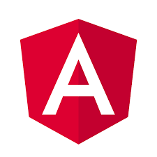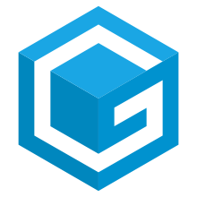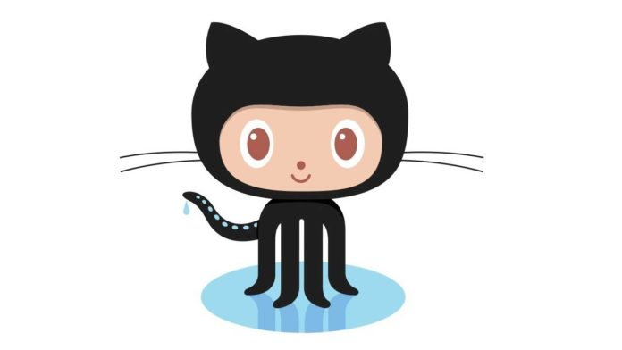
Cos'è Gitpod?
Gitpod è un ambiente di sviluppo on line basato sull’editor visual studio code.
Come creare un progetto in gitpod
- Per avviare un progetto su gitpod è necessario partire da un repository github
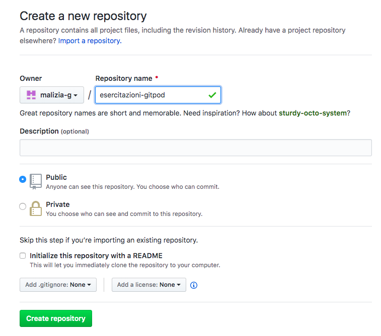
- Una volta ottenuto il repository è possibile aprire l’editor gitpod semplicemente anteponendo all’url del vostro repository il testo gitpod.io#
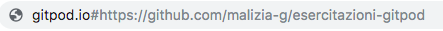 - Scegliete la configurazione standard premendo continue

L’interfaccia di gitpod

L’interfaccia di gitpod è divisa in tre parti principali.
Quando viene aperto un progetto, il file explorer è impostato su una cartella già versionata con GIT.
Inoltre il repository è già collegato al repository remoto che avete usato per aprire l’editor (nel punto 2)
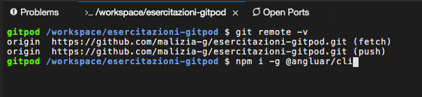
Angular CLI
Gitpod ha preinstallato NodeJS, ma è necessario installare la console angular ogni volta che si apre un ambiente (e ogni volta che l’ambiente va in standby)
Creare e avviare un progetto Angular
- Creiamo un progetto
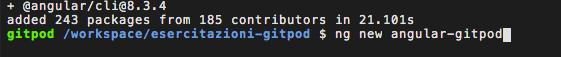 - Entriamo nella cartella del progetto
cd angular-gitpod - Avviamo il server
ng serve --disable-host-check (nota: l’opzione --disable-host-check è necessaria perchè siamo su una macchina remota) - Esponiamo la porta
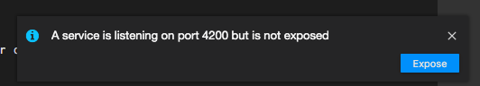 - Apriamo il browser
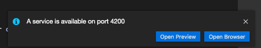
- In alternativa potete fare Ctrl+click sul link in azzurro (localhost:4200)
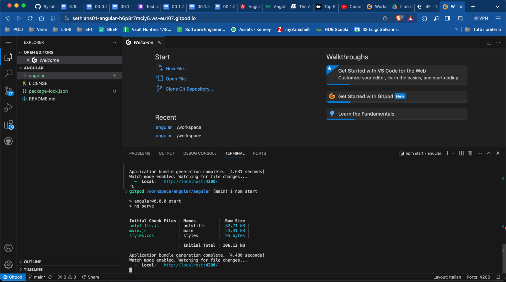
- Visitiamo la pagina iniziale del progetto
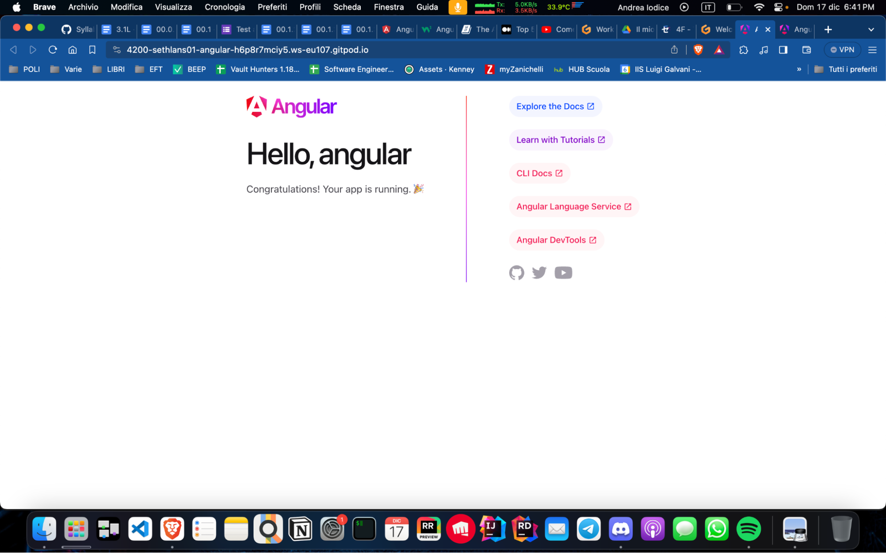